Geodesic Farthest Point Sampling
This tour explores the use geodesic computation to perform image sampling.
Contents
Installing toolboxes and setting up the path.
You need to download the following files: signal toolbox, general toolbox and graph toolbox.
You need to unzip these toolboxes in your working directory, so that you have toolbox_signal, toolbox_general and toolbox_graph in your directory.
For Scilab user: you must replace the Matlab comment '%' by its Scilab counterpart '//'.
Recommandation: You should create a text file named for instance numericaltour.sce (in Scilab) or numericaltour.m (in Matlab) to write all the Scilab/Matlab command you want to execute. Then, simply run exec('numericaltour.sce'); (in Scilab) or numericaltour; (in Matlab) to run the commands.
Execute this line only if you are using Matlab.
getd = @(p)path(p,path); % scilab users must *not* execute this
Then you can add the toolboxes to the path.
getd('toolbox_signal/'); getd('toolbox_general/'); getd('toolbox_graph/');
Voronoi Segmentation
A geodesic Voronoi segementation is obtained by computing a geodesic distance from multiple starting points.
Compute an image with bumps.
n = 256; % size of the image sigma = n/8; % width of the bumps [Y,X] = meshgrid(1:n,1:n); x = n/4; y = n/4; M = exp( -( (X-x).^2 + (Y-y).^2 )/(2*sigma^2) ); x = 3*n/4; y = 3*n/4; M = M + exp( -( (X-x).^2 + (Y-y).^2 )/(2*sigma^2) );
Compute a metric by rescaling M.
W = rescale(M,1e-2,1);
Create random starting points.
m = 20; pstart = floor( rand(2,m)*(n-1) ) +1;
Perform the propagation using the Fast Marching.
[D,Z,Q] = perform_fast_marching(1./W, pstart);
Display the distance map.
clf; subplot(1,2,1); hold on; imageplot(perform_hist_eq(D,'linear')); title('Geodesic distance'); plot(pstart(2,:), pstart(1,:), 'r.'); subplot(1,2,2); hold on; imageplot(Q); title('Voronoi'); plot(pstart(2,:), pstart(1,:), 'r.'); colormap jet(256);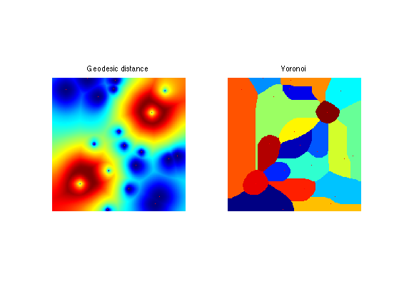
Geodesic Delaunay Triangulation
A geodesic Delaunay triangulation is obtained by linking starting points whose Voronoi cells touch. This is the dual of the original Voronoi segmentation.
Exercice 1: (check the solution) Using Q, compute the faces faces of the Delaunay triangulation. To that end, extract each quad of values Q(i,j),Q(i+1,j),Q(i+1,j+1),Q(i,j+1), and add a new face when three of these four values are different (this corresponds to a Voronoi point). Display the obtained triangulation.
exo1;
Display the obtained triangulation.
clf; subplot(1,2,1); hold on; imageplot(Q, 'Voronoi'); axis ij; plot(pstart(2,:), pstart(1,:), 'r.'); subplot(1,2,2); plot_triangulation(pstart,faces, M); colormap jet(256);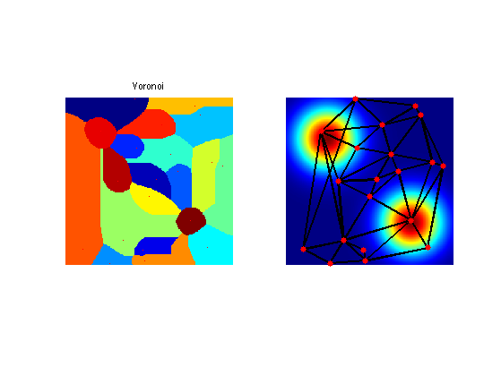
Compare this Geodesic Delaunay triangulation with the Euclidean triangulation.
faces_euc = compute_delaunay(pstart);
Display.
clf; subplot(1,2,1); plot_triangulation(pstart,faces, M); title('Geodesic'); subplot(1,2,2); plot_triangulation(pstart,faces_euc, M); title('Euclidean'); colormap jet(256);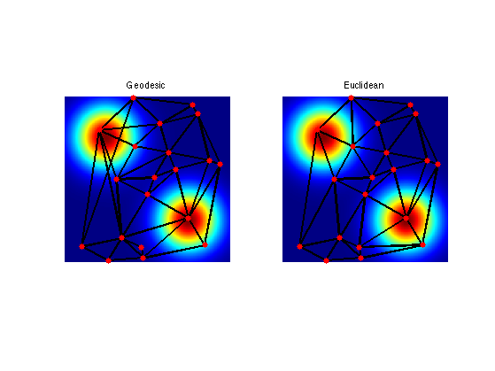
Farthest Point Sampling
To sample point uniformly according to the geodesic distance, one can use an iterative farthest point sampling scheme.
Construct a metric that is large in area where we want to sample more points. The front should move slowly in high density sampling region.
W = rescale(M,3*1e-1,1);
Choose the initial point.
vertex = [1;1];
Compute the geodesic distance.
[D,Z,Q] = perform_fast_marching(1./W, vertex);
Choose the second point as the farthest point.
[tmp,i] = max(D(:)); [x,y] = ind2sub([n n],i); vertex(:,end+1) = [x;y];
Display distance and points.
clf; subplot(1,2,1); hold on; imageplot(W, 'Metric'); axis ij; plot(vertex(2,1), vertex(1,1), 'r.'); plot(vertex(2,2), vertex(1,2), 'b.'); subplot(1,2,2); hold on; imageplot( perform_hist_eq(D, 'linear'), 'Distance'); axis ij; plot(vertex(2,1), vertex(1,1), 'r.'); plot(vertex(2,2), vertex(1,2), 'b.'); colormap jet(256);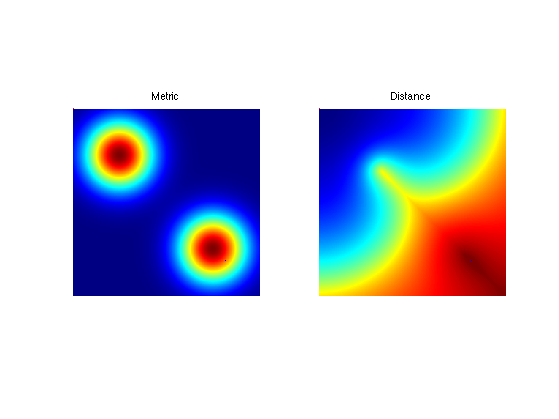
Update the value of the distance map with a partial propagation from the last added point.
options.constraint_map = D; [D1,Z,Q] = perform_fast_marching(1./W, vertex(:,end), options); % display old/new clf; imageplot( convert_distance_color(D,M,1), 'Update distance', 1,3,1 ); imageplot( convert_distance_color(D1,M,1), 'Update distance', 1,3,2 ); imageplot( convert_distance_color(min(D,D1),M,1), 'New distance', 1,3,3 ); % update D = min(D,D1);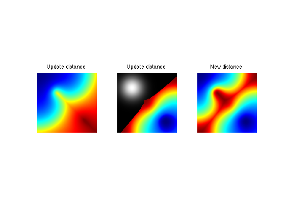
Exercice 2: (check the solution) Iterate the sampling process to add more and more points.
exo2;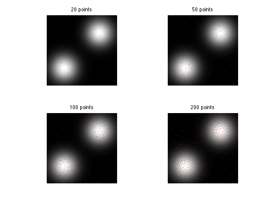
Exercice 3: (check the solution) Display the geodesic Delaunay triangulation corresponding to the sampling
exo3;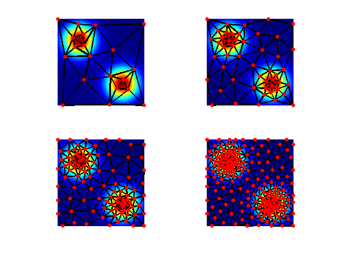
Lloyd Relaxation
The farthest point sampling strategy is greedy and does not move the positions of the points once they are seeded.
To enhance the sampling, it is possible to relocate iteratively the points at the center of the Voronoi cells. This corresponds to the Lloyd algorithm, first developped for vector quantization.
First with a constant metric.
n = 512; W = ones(n);
Seed random points.
p = 40; vertex = floor(rand(2,p)*n-1)+1;
Compute Voronoi partition.
[D,Z,Q] = perform_fast_marching(1./W, vertex);
Display Vornoi cells.
clf; hold on; imageplot(Q'); h = plot(vertex(1,:), vertex(2,:), 'k.'); set(h, 'MarkerSize', 15); colormap(jet(256));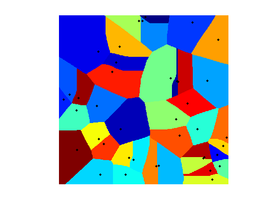
Re-center each point at the barycenter of its cell.
for i=1:p [x,y] = ind2sub(size(W), find(Q==i)); vertex(:,i) = [mean(x);mean(y)]; end
Display updated partitions.
[D,Z,Q] = perform_fast_marching(1./W, vertex); clf; hold on; imageplot(Q'); h = plot(vertex(1,:), vertex(2,:), 'k.'); set(h, 'MarkerSize', 15); colormap(jet(256));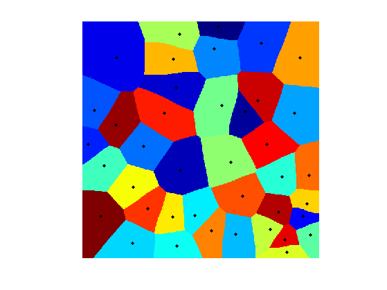
Exercice 4: (check the solution) Perform the Lloyd iterative algorithm.
exo4;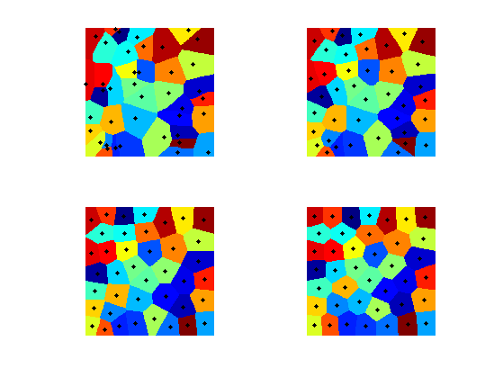
Now we define a non-constent metric.
n = 256; x = linspace(-1,1,n); [Y,X] = meshgrid(x,x); sigma = .3; W = exp( -(X.^2+Y.^2)/(2*sigma^2) ); W = rescale(W,.02,1);
Display.
clf; imageplot(W);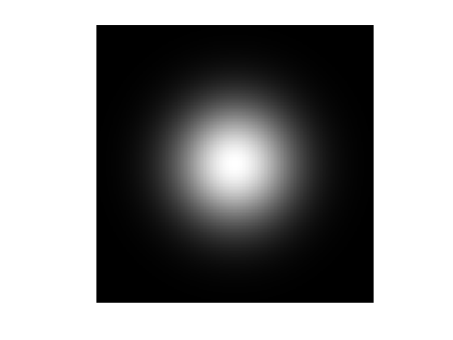
Exercice 5: (check the solution) Perform the Lloyd iterative algorithm.
exo5;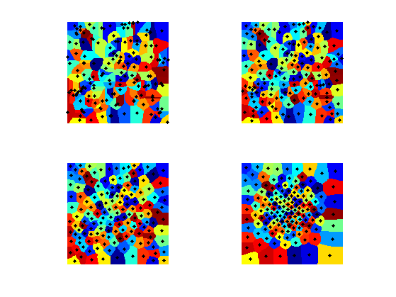